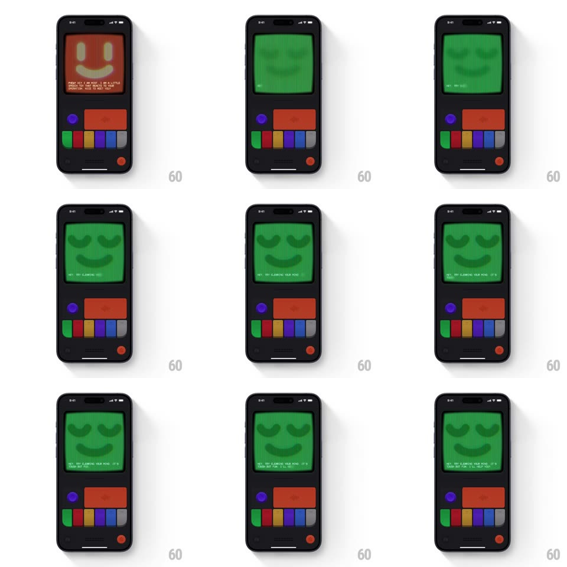

Media
Frame-by-frame

Rebuild this interaction 1:1: Mist's peace switch - tapping the Peace button floods the CRT with a solid green flash, then settles into a calm green face with gently closed eyes and a soft smile while soothing copy types out below.

Rebuild this interaction 1:1: Mist's peace switch - tapping the Peace button floods the CRT with a solid green flash, then settles into a calm green face with gently closed eyes and a soft smile while soothing copy types out below. ## Integration Integration: stack-agnostic spec - springs given as stiffness/damping, timed motions as duration + curve; map every value to your framework and animation library of choice. ## Scene Dark console body: CRT screen with the pixel face, control cluster below (purple knob, wide red button, colored pill keys, red power dot). Start state is the red energetic smiley; end state is the green peaceful face. ## Motion spec Pattern: state flip via full-screen color flood. - Tap Peace: the screen flashes solid green (full-field color, 200ms) - a wipe, not a crossfade - then the green face fades up from that flood (opacity 0 -> 1, 350ms, ease-out). - The peaceful face breathes: the whole face scales +/-2% on a slow 3s loop, like steady breathing. - Copy types out character by character (30ms/char, monospace, blinking block cursor): "HEY... TRY CLEARING YOUR MIND. IT'S CRAMMED OUT THERE, I'LL HELP YOU". - The green is a deep phosphor green; eyes closed as soft downward arcs, mouth a small relaxed curve. ## Calibration - The solid-color flood is the transition's only loud moment - everything after it is slow and quiet. - Breathing amplitude stays under 3% - calm, not pulsing. ## Reduced motion Face and text appear without the flood flash or typing. ## Don't miss - The flash happens before the face appears - one beat of pure green between states. - The closed-eye arcs replace the usual oval eyes entirely; there is no "awake" frame in this mode.